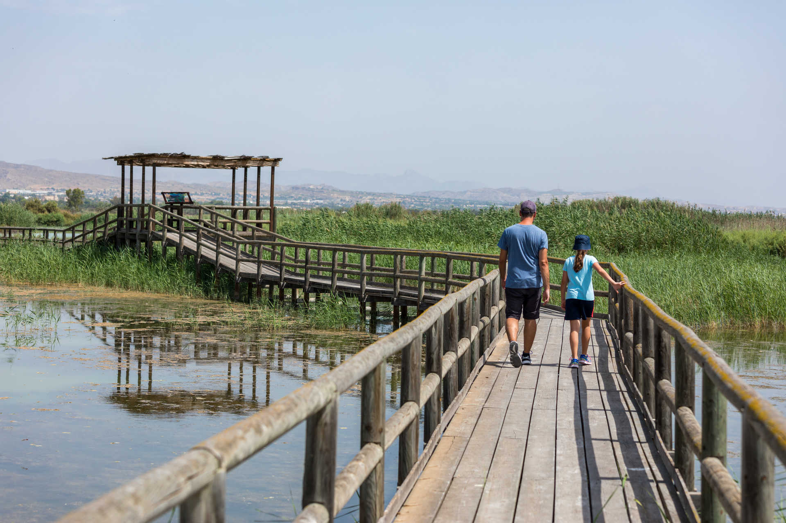
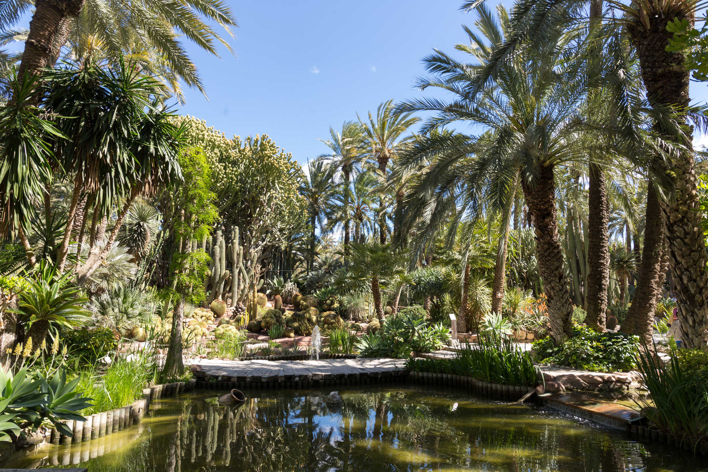
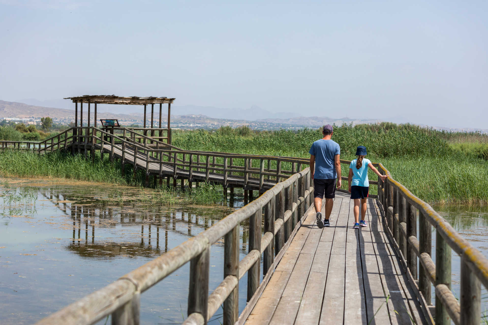
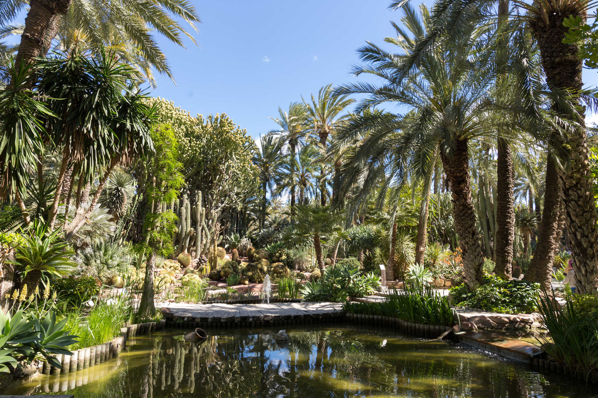

Elche
 



Elche es una ciudad y un municipio de España situado en la provincia de Alicante, en la Comunidad Valenciana. Capital del Bajo Vinalopó, su población es de 245 557 habitantes (INE 2025), siendo la población de su casco urbano de 193 077 habitantes (INE 2023). De esta forma, es la segunda ciudad más poblada de la provincia de Alicante y la tercera de la Comunidad Valenciana, la decimonovena de España y la cuarta mayor ciudad del país sin rango de capital de provincia, desde el punto de vista de población compacta, por detrás de Vigo, Gijón y Hospitalet de Llobregat. El área metropolitana de Alicante-Elche, que la agrupa con la conurbación de Alicante-San Vicente del Raspeig-San Juan de Alicante y con las localidades próximas de Santa Pola y Crevillente, es la octava más poblada de España, con más de 870 000 habitantes